Ejercicios interactivos de la varianza
Escoge la opción que indica la varianza de cada serie de datos:
1El número de veces que come pasta durante una semana un grupo de tres amigos:
2, 4, 3
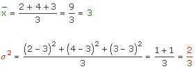
2Los litros de agua que beben al día un grupo de cuatro amigos:
2, 1, 3, 2
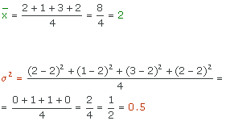
3El número de horas que Carmen ha visto la tele durante cada día de la semana pasada es:
3, 2, 3, 3, 2, 6, 3
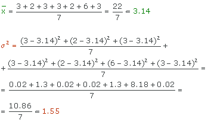
4Las veces que se cepilla María los dientes al día durante una semana:
1, 2, 3, 3, 4, 2, 1.
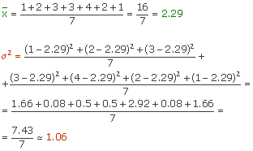
5Las notas de los exámenes de matemáticas realizados durante el curso por Pablo son:
7, 5, 6, 8, 7, 8, 8, 9, 10, 10.
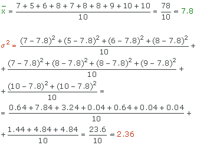
6El número de horas que dedican los diez grupos de alumnos formados en una clase al realizar un trabajo de investigación sobre de Geometría:
5, 5, 12, 13, 15, 15, 15, 20, 20, 23
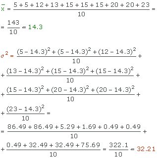
7Las estaturas en centímetros de un grupo de cinco amigos:
150, 160, 164, 158, 183.
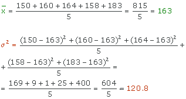
8El número de veces que va al cine en un mes cada componente de un grupo de once amigos es:
2, 2, 2, 3, 1, 2, 1, 3, 1, 1, 4
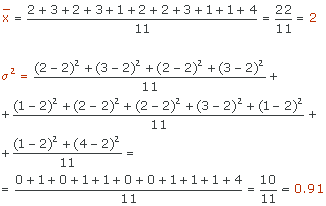
Contesta a las siguientes cuestiones:
9Las notas de matemáticas de los 26 alumnos de una clase son:
6, 2, 4, 4, 5, 5, 6, 3, 8, 6, 5, 3, 7, 6, 5, 6, 4, 4, 4, 3, 5, 5, 4, 6, 7, 4
Calcula la varianza de las notas obtenidas, redondeando a dos cifras decimales si fuese necesario:
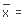
| xi | fi | xi · fi | xi2 · fi | |
|---|---|---|---|---|
| 2 | I | 1 | 2 | 4 |
| 3 | III | 3 | 9 | 27 |
| 4 | 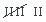 | 7 | 28 | 112 |
| 5 | 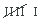 | 6 | 30 | 150 |
| 6 | 6 | 36 | 216 | |
| 7 | II | 2 | 14 | 98 |
| 8 | I | 1 | 8 | 64 |
| 26 | 127 | 671 |
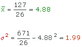
10Las faltas de asistencia de 25 alumnos de otra clase son:
0, 1, 1, 1, 3, 2, 2, 7, 1, 2, 1, 0, 0, 0, 1, 2, 1, 2, 1, 2, 0, 0, 4, 6, 7
Calcula la varianza:
| xi | fi | xi · fi | xi2 · fi | |
|---|---|---|---|---|
| 0 | 6 | 0 | 0 | |
| 1 | 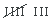 | 8 | 8 | 8 |
| 2 | 6 | 12 | 24 | |
| 3 | I | 1 | 3 | 9 |
| 4 | I | 1 | 4 | 16 |
| 6 | I | 1 | 6 | 36 |
| 7 | II | 2 | 14 | 98 |
| 25 | 47 | 191 |
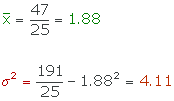
Si tienes dudas puedes consultar la teoría